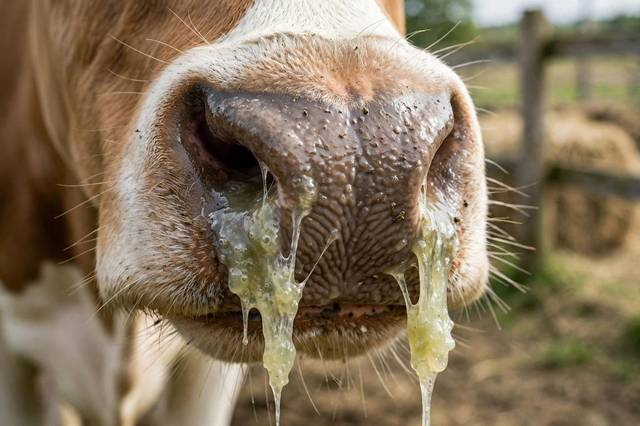
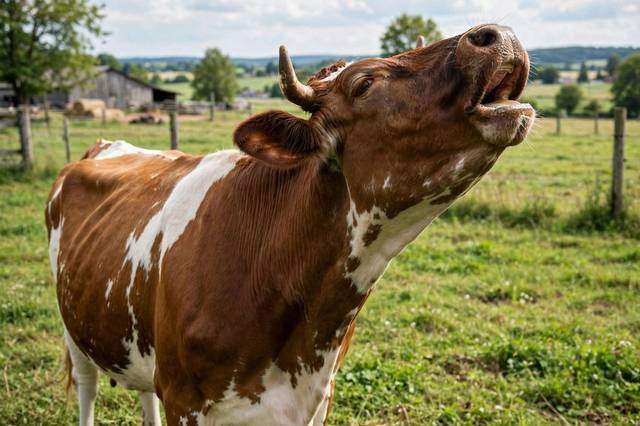
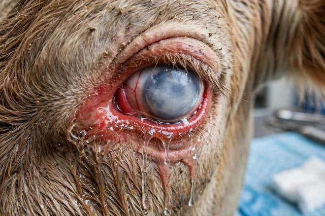
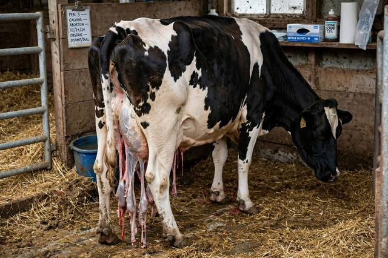
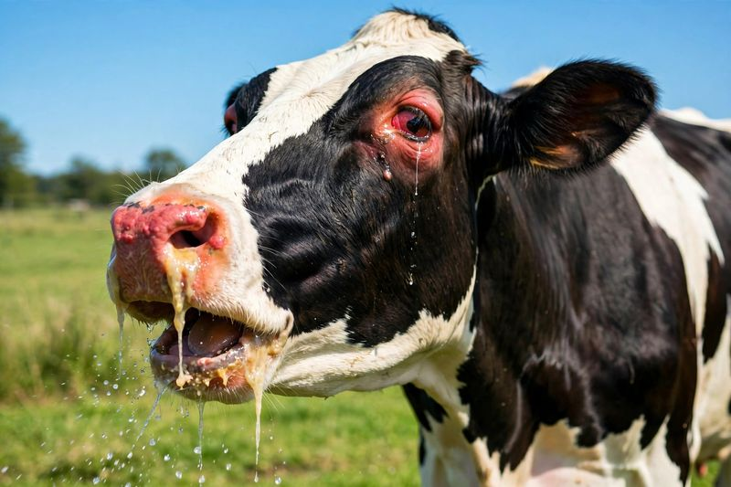
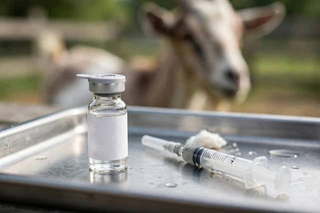

IBR is a contagious disease caused by bovine herpesvirus 1. It can cause respiratory disease, reproductive problems and genital infections; infected animals may carry latent virus.
This guide covers clinical signs, causes, diagnosis, treatment principles and prevention.
Clinical Signs
1
Fever(High body temperature)
2
Nasal Discharge(Discharge from the nose)
3
Red Inflamed Nasal Mucosa(Red, inflamed lining inside the nose)
4
Cough(Persistent coughing)
5
Conjunctivitis(Red, inflamed eyes with tearing)
6
Reduced Milk Yield(Fall in milk production)
7
Abortion(Loss of pregnancy in some cases)
8
Pustular Vulvovaginitis or Balanoposthitis(Sores on the genitals in the genital form)
Fever

Nasal DischargeRed Inflamed Nasal Mucosa

Cough

ConjunctivitisReduced Milk Yield

Abortion

Pustular Vulvovaginitis or Balanoposthitis
Causes and Transmission
The virus spreads through respiratory and genital secretions, direct contact, semen and movement of infected animals. Stress can reactivate latent infection and lead to shedding.
Pathogenesis
Bovine herpesvirus-1 enters through the nose or eyes and infects the lining of the upper airways, causing inflammation of the nose and windpipe with discharge and coughing. The virus damages the respiratory defences, allowing secondary bacteria to cause pneumonia.
After recovery the virus hides (latency) in nerve ganglia for life and can reactivate during stress, when the animal sheds virus again. In pregnant cows the virus can reach the uterus and cause abortion.
Veterinary Diagnosis
Diagnosis is based on clinical and herd history and may be confirmed by PCR or other laboratory tests. Vaccination can affect interpretation of some serological tests.
Differential Diagnosis
Several conditions can look similar. A veterinarian distinguishes them by the signs, history and laboratory findings:
Pinkeye — causes eye discharge and cloudiness without respiratory signs.
Malignant catarrhal fever — causes eye and mouth lesions with very high fever and a much worse outlook.
Treatment and Case Management
Treatment is supportive and directed by a veterinarian. Antibiotics do not treat the virus but may be considered for diagnosed secondary bacterial complications. Isolate sick animals and follow breeding restrictions advised by the veterinarian.
When to seek urgent help: Abortion storms, severe respiratory distress or rapid spread through a herd warrant prompt veterinary investigation.
Recommended Medicines
1
Antibiotic – Oxytetracycline(Only for secondary bacterial infection)10 mg/kg IM daily (conventional) — or LA preparation: 20 mg/kg IM/SC once, repeat after 3–4 days if needed
2
NSAID – Meloxicam(For fever and pain)0.5 mg/kg IV/SC once
3
Supportive care – Multivitamins(To support recovery)10 ml IM daily
⚠ Important Tips:
Antibiotics do not treat the virus — use only for secondary infection, under veterinary advice.
Isolate sick animals from the rest of the herd.
Follow breeding restrictions advised by the veterinarian.
Keep sick animals comfortable, hydrated and well fed.

Vaccination — follow the vet’s scheduleInjection — vet-administered only
Prevention and Herd Management
Use tested breeding stock and semen, quarantine new animals, reduce mixing, maintain ventilation and discuss suitable vaccination strategies with local veterinary services.
Frequently Asked Questions
What are the symptoms of IBR in cattle?
Fever, nasal discharge, red inflamed nasal mucosa, cough, conjunctivitis, reduced milk yield and sometimes abortion. Genital forms may cause pustular vulvovaginitis or balanoposthitis.
What causes IBR in cattle?
IBR is caused by bovine herpesvirus 1. It spreads through respiratory and genital secretions, direct contact, semen and movement of infected animals. Stress can reactivate latent infection and lead to shedding.
How is IBR in cattle diagnosed?
Diagnosis is based on clinical and herd history and may be confirmed by PCR or other laboratory tests. Vaccination can affect interpretation of some serological tests.
How is IBR in cattle treated?
Treatment is supportive and directed by a veterinarian. Antibiotics do not treat the virus but may be considered for diagnosed secondary bacterial complications. Isolate sick animals and follow breeding restrictions advised by the veterinarian.
How can IBR in cattle be prevented?
Use tested breeding stock and semen, quarantine new animals, reduce mixing, maintain ventilation and discuss suitable vaccination strategies with local veterinary services.
What is IBR in cattle?
IBR is a contagious disease caused by bovine herpesvirus 1. It can cause respiratory disease, reproductive problems and genital infections, and infected animals may carry latent virus that stress can reactivate.
Why does my cow abort?
IBR is one cause of abortion in cattle, along with fever, nasal discharge, cough and reduced milk yield. Abortion storms across a herd warrant prompt veterinary investigation, so contact a veterinarian.
گائے میں آئی بی آر (IBR) کیا ہے؟
آئی بی آر ایک متعدی وائرل بیماری ہے جو سانس کی تکلیف، ناک سے پانی بہنا، کھانسی، آنکھ کی سوزش اور بعض اوقات اسقاط حمل کا سبب بنتی ہے۔ یہ سانس اور تولیدی رطوبتوں سے پھیلتی ہے۔ علاج معاون ہوتا ہے اور ویٹرنری ڈاکٹر کی نگرانی میں کیا جاتا ہے۔
Key Takeaway
Early recognition, accurate diagnosis, responsible veterinary care and herd-level prevention are central to managing this condition. Follow current local veterinary authority guidance and medicine labels.
Radostits, O.M., Gay, C.C., Hinchcliff, K.W., Constable, P.D. Veterinary Medicine: A Textbook of the Diseases of Cattle, Horses, Sheep, Pigs and Goats.
WOAH (World Organisation for Animal Health). Manual of Diagnostic Tests and Vaccines for Terrestrial Animals.
WOAH (World Organisation for Animal Health). Terrestrial Animal Health Code.
اردو خلاصہ — کسانوں کے لیے آسان الفاظ میں
یہ بیماری کیا ہے؟
یہ ایک وائرل بیماری ہے جو ناک، آنکھوں اور سانس کی نالی کو متاثر کرتی ہے اور اسقاط کا باعث بھی بن سکتی ہے۔ وائرس کا علاج نہیں ہوتا؛ امدادی دیکھ بھال دی جاتی ہے۔
اہم علامات
بخار
ناک سے رطوبت بہنا اور ناک کا سرخ ہونا
کھانسی
آنکھوں کی سوزش اور پانی بہنا
دودھ کم ہونا اور اسقاط
فوری علاج اور احتیاط
بیمار جانور کو الگ رکھیں
ڈاکٹر ثانوی جراثیمی بیماری کے لیے اینٹی بائیوٹک اور بخار و درد کی دوا دے سکتا ہے
کئی جانوروں میں اسقاط یا سانس کی شدید تکلیف ہو تو فوراً ڈاکٹر کو بلائیں
افزائش کے لیے ٹیسٹ شدہ نر اور سیمن استعمال کریں اور ویکسین پر ڈاکٹر سے مشورہ کریں
درست تشخیص اور خوراک کے لیے اپنے ویٹرنری ڈاکٹر سے رابطہ کریں۔
✍️ Written by Dr. Shahid Bilal Depal, DVM (PVMC RVMP #15068)
This guide is for educational purposes. Consult a registered veterinarian for diagnosis and treatment.